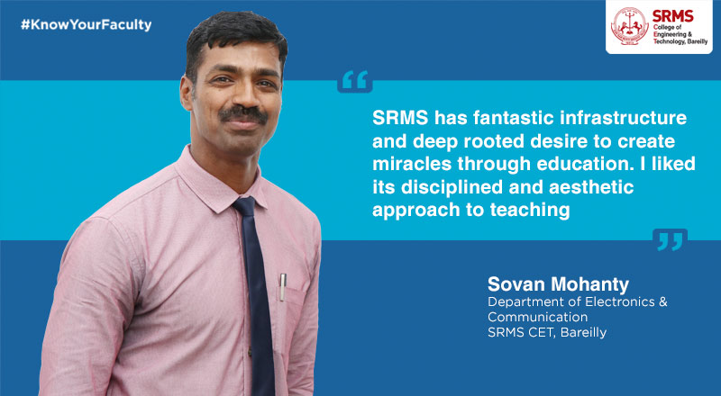

Introduction
Dr Sovan Mohanty is a Chartered Engineer, having an expertise in RF/Microwave Antenna for Wireless Communication, Optical Communication, Digital & Analog Communication, EMI/EMC, Millimeter Wave Technology, VLSI & Embedded Systems, IoT, 5G Wireless Communication, Advance Semiconductor Devices, Digital Signal Processing, Robotics etc.
Accomplishments
Before joining SRMS Institute, he worked in MIG-21(All Variants) Fighter Aircraft & Avionics Laboratory in the Indian Air Force.
Total 29 years of teaching & industry experience,
Legacy
Dr. Sovan Mohanty's Legacy as a Great Professor and Idol to whom people could look up to Will never be diminished and continue till the end.
